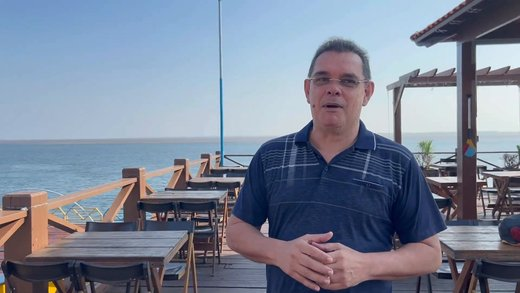

00:01:21.700
O apresentador está sobre um deque de madeira com mesas, estruturas de telha e o rio ao fundo.
Terminal Fluvial Turístico, Santarém (PA) · confirmado
Ele identifica o terminal e sugere observar o rio e o movimento da orla ao longo do dia.
Transcrição · 00:01:10 | 00:01:18 | 00:01:26 | 00:01:33
Turismo Aqui — quadro de vídeo publicado no YouTube